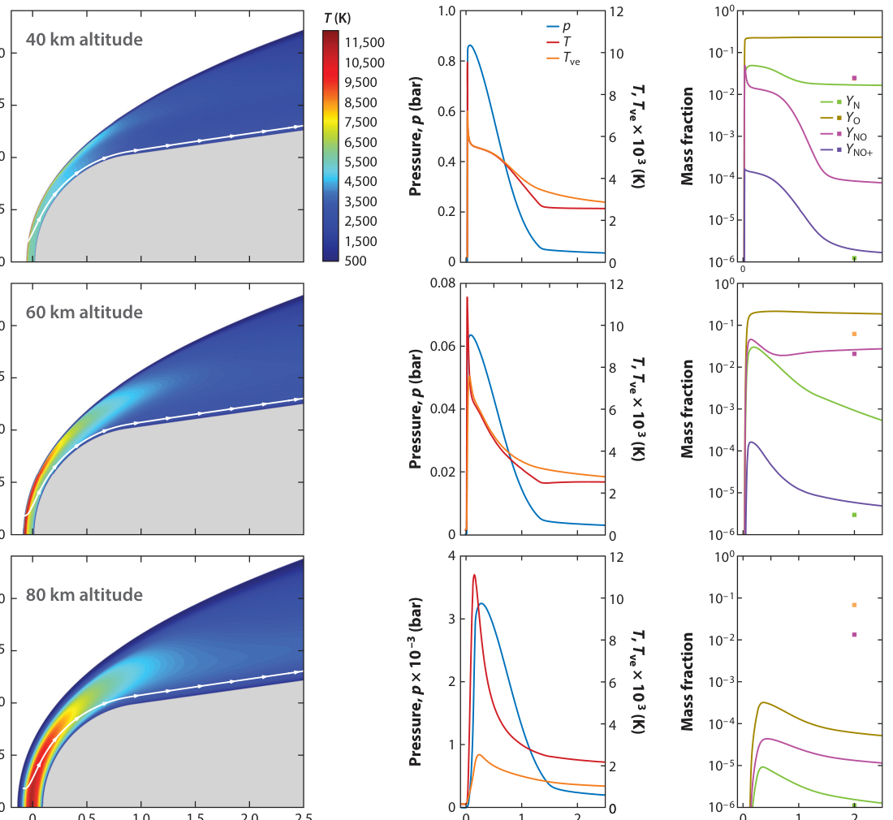
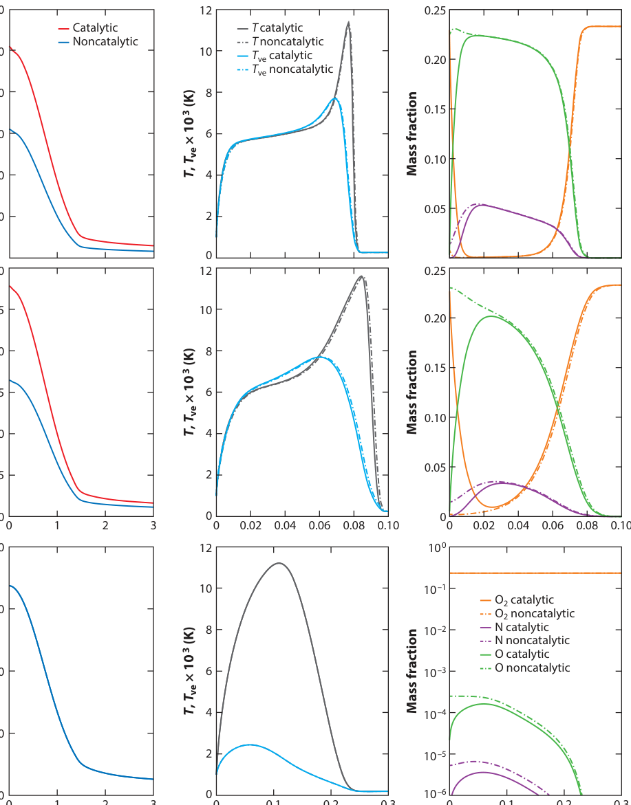
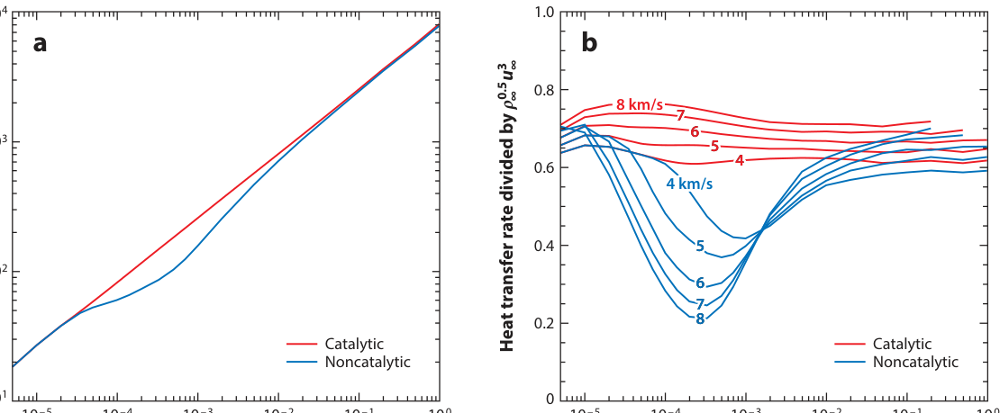
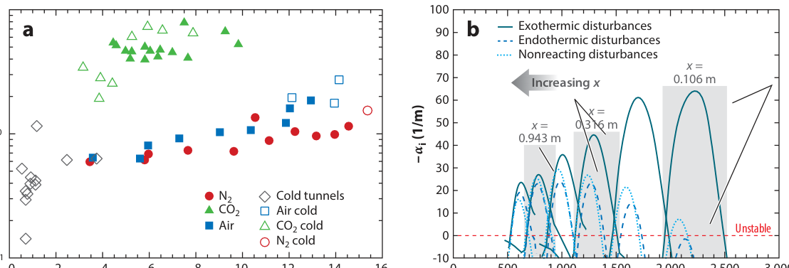

01中文摘要
本文综述高超声速流动中的速率效应。高超声速流动的高温区会激发内能、引发化学反应、电离和气-面相互作用，这些过程的速率常与流动特征速率相当，使气体偏离局部热力学平衡。文章概述内能和化学状态守恒方程，评述内能松弛、反应速率和输运性质的主流模型，介绍包括有限速率催化和滑移效应的气-面边界条件，讨论第一性原理计算在关键气相反应速率中的应用，并给出有限速率碳烧蚀模型及其在高超声速条件下的作用。
原始摘要（英文/原文）
Hypersonic flows are energetic and result in regions of high temperature, causing internal energy excitation, chemical reactions, ionization, and gassurface interactions. At typical flight conditions, the rates of these processes are often similar to the rate of fluid motion. Thus, the gas state is out of local thermodynamic equilibrium and must be described by conservation equations for the internal energy and chemical state. Examples illustrate how competition between rates in hypersonic flows can affect aerodynamic performance, convective heating, boundary layer transition, and ablation. The conservation equations are outlined, and the most widely used models for internal energy relaxation, reaction rates, and transport properties are reviewed. Gas-surface boundary conditions are described, including finiterate catalysis and slip effects. Recent progress in the use of first-principles calculations to understand and quantify critical gas-phase reactions is discussed. An advanced finite-rate carbon ablation model is introduced and is used to illustrate the role of rate processes at hypersonic conditions.
02阅读说明
文章类型：叙述性综述（Annual Review of Fluid Mechanics 51:379–402，PDF 26 页，正文 pp.379–402）。材料为带页码全文与 10 项图件清单（图 1–9 与 Table 1 均已列入；Figure 4 的两个面板被分别裁为 fig05_p7.png 与 fig06_p7.png）。式 9–13、16–20 已用 PDF 第 11–13、14–15 页核对，式 1–8 依 bundle 文本。综述未报告检索数据库、检索式与纳入标准；定量算例主要是作者课题组 US3D 计算结果与引用文献的实验/数值数据。信息完整度：高，但多数定量结论为他人数据或示例性算例。 文章类型：期刊、综述
03一句话核心与三句话摘要
综述高超声速流动中有限速率过程对气动、热流、转捩与烧蚀的影响。
- 问题与缺口：高超声速流动中振动激发、化学反应与气固反应的速率常与对流率同量级，气体普遍处于热化学非平衡；而工程常用的平衡假设、Park TTv 模型与平衡 B′ 烧蚀模型多为经验或权宜处理，物理保真度不足。 AI概括
- 内容与方法：以 0.1 m 半径球锥在 40/60/80 km、5 km/s 的算例为主线，给出组分/动量/内能/总能量守恒方程、两温度热力学、质量作用与 Landau–Teller 源项、有限速率催化与滑移边界条件，并综述二元/三元标度、振动-声波耦合、ab initio 势能面以及有限速率碳烧蚀模型。 AI概括
- 主要结论：中等密度下催化壁使驻点热流增加 64%–69%，振动松弛可在 ωτv≈1 时调谐抑制第二模态并使 CO2 转捩 Reynolds 数高一个量级，有限速率烧蚀模型给出的退蚀远小于平衡 B′ 模型；验证数据不足与湍流建模欠缺是主要短板。 AI概括
04核心内容清单
| 要点 | 类型 | 重要性 | 原文依据 | 属性 |
|---|---|---|---|---|
| 高超声速流动中振动激发、化学反应与气固反应速率常与对流率同量级，气体普遍偏离局部热力学平衡，需用内能与组分守恒方程描述。 | 核心论点 | A | p.381；式(1)(3) | 原文明确 |
| 完全气体正激波关系显著高估激波后温度：M≈6 时实际约 6000 K，完全气体给出 12,300 K。 | 定量结果 | A | p.381 | 原文明确 |
| 热化学状态受密度强烈调制：40/60/80 km 三个算例在 s/R=2 处的 N 原子分别比平衡高 4 个量级、高 3 个量级、低于平衡。 | 定量结果 | A | 图 2；p.383 | 原文明确 |
| 催化壁使驻点热流增加 64%（40 km）与 69%（60 km），80 km 无可测差别，原因是原子表面复合把化学键能沉积到壁面。 | 定量结果 | A | 图 3；p.383 | 原文明确 |
| 以 √ρ∞u∞³ 归一化后，催化壁驻点热流近似与密度无关，非催化壁强烈依赖密度并在中等密度出现显著下降。 | 定量结果 | A | 图 4(b)；p.385 | 原文明确 |
| 解离遵循二元标度 ρ∞L/u∞，复合遵循三元标度 ρ∞²L/u∞，这解释了为何 60 km 的化学冻结强于 40 km、以及非催化热流的密度依赖。 | 标度/机制 | A | 式(17)(18)；p.392 | 原文明确 |
| 振动松弛可与第二模态共振：ωτv≈1 时声波阻尼最强；CO2 转捩 Reynolds 数比空气/N2 高约一个量级，放热反应增强、吸热反应抑制扰动增长。 | 机制/验证 | A | 图 6；图 7；p.394–395 | 原文明确 |
| 声波-振动耦合分三个区制：平衡（低频快速调整）、非平衡（相位滞后吸收能量）、冻结（不响应）；100 kHz 在 1000 K CO2 中强阻尼。 | 机制 | B | 图 8；p.395–396 | 原文明确 |
| 壁面有限速率催化边界条件可由反应面质量平衡加动理论单侧通量导出；α=0 为非催化，α→1 时复合受扩散限制。 | 推导 | B | 式(11)–(13)；p.390 | 原文明确 |
| 有限速率烧蚀模型给出的表面退蚀显著小于平衡 B′ 模型；Zhluktov–Abe 模型退蚀最低但实验表明其不足，Poovathingal 等模型更接近数据。 | 对比结果 | B | 图 9；p.397–398 | 原文明确 |
| 模型短板：Park TTv 模型广泛使用是因其易实现而非精度已验证；ẽv,s=0.3De 的假设不正确；高超声速湍流建模欠缺，低速模型被直接移植。 | 评述 | B | p.388；p.396 | 原文明确 |
| 地面设施难以同时复现真实气体效应与厚边界层：Shuttle 首次高 Mach 再入需 16° 体襟翼偏转而非预测的 7°，该差异被归因于真实气体效应，也可能来自黏性-无黏干扰，文献中并无共识。 | 工程案例 | B | p.386 | 原文明确 |
05引言：研究问题与领域缺口
高超声速通常指 M>5；Mach 数平方正比于动能与内能之比。Space Shuttle 再入速度 7.5 km/s（约 Mach 25），动能约为自由来流热能的 124 倍。激波与边界层内的高温激发振动/电子能、化学反应、电离与气固作用，使完全气体激波关系失效。Mach 6 正激波后振动能约占总内能的 10%，更高 Mach 数下还需考虑电子激发与电离。核心论点是：在典型高超声速条件下，这些过程的速率与对流速率同量级，气体很少处于局部热力学平衡，必须用内能与组分守恒方程追踪热化学状态。作者以球锥三个高度算例说明密度对速率过程与流场的控制作用，并列出速率效应在飞行器与地面设施上的表现（Shuttle 俯仰异常、Mars Pathfinder 配平、边界层转捩、烧蚀、激波风洞喷管化学冻结）。缺口在于模型多依赖 1960–70 年代激波管标定的速率与经验模型，缺乏物理保真度与验证。
06流动条件与几何构型
| 项目 | 数值/描述 | 依据 | 备注 |
|---|---|---|---|
| 高超声速定义 | M>5 通常视为高超声速 | p.380 | Mach 数平方正比于动能/内能 |
| 球锥基准算例几何与速度 | 0.1 m 半径球锥，5 km/s，40/60/80 km 三个高度 | 图 2；表 1，p.382 | |
| 40 km 来流 | ρ∞=3.85×10⁻³ kg/m³，T∞=251 K，p∞=278 Pa，M=15.7，平均自由程 19.7 µm | 表 1，p.382 | |
| 60 km 来流 | ρ∞=2.88×10⁻⁴ kg/m³，T∞=245 K，p∞=20.3 Pa，M=15.9，平均自由程 261 µm | 表 1，p.382 | |
| 80 km 来流 | ρ∞=1.57×10⁻⁵ kg/m³，T∞=197 K，p∞=0.886 Pa，M=19.9，平均自由程 4,430 µm | 表 1，p.382 | |
| 壁面条件（催化对比算例） | 等温壁 Tw=1,000 K；分别设完全催化（撞击原子全部复合）与完全非催化 | p.383；图 3 | |
| 热流-密度系列算例 | 0.1 m 半径球，来流速度 4–8 km/s，宽自由来流密度范围，Tw/To=0.079 | 图 4；p.385 | |
| T5 激波风洞转捩实验 | 5° 半角尖锥；自由来流总焓约 0–16 MJ/kg（图 7a 横轴）；气体为 N2、空气、CO2 | 图 7(a)；p.394 | 总焓范围按图 7a 横轴读数，原文正文未给统一区间 |
| 声波-振动耦合算例 | CO2 中 100 kHz 声波，初始温度 300 K、1,000 K、2,500 K | 图 8；p.395–396 | |
| CUBRC 激波风洞 N2 条件 | 自由来流平动-转动温度 98 K，振动温度冻结在喷管喉道附近约 2,560 K，振动适应系数取 10⁻³ | p.391 | |
| 石墨烧蚀算例 | 6.35 cm 半径石墨球锥，30 km 高度、3.5 km/s，暴露 830 s | 图 9；p.398 | |
| 连续介质判据 | 梯度长度局部 Knudsen 数超过约 0.05 时 Navier–Stokes 可能失效 | 式(19)；p.393 |
07核心现象与关键参数
| 参数 | 定义 | 数值 | 关系/说明 | 依据 |
|---|---|---|---|---|
| Damköhler 数 | 有限速率过程速率与特征对流速率之比（无量纲化后得到） | 大值→接近平衡，小值→冻结；具体算例数值文中未提及 | 由反应速率除以对流率构造 | p.392 |
| 二元标度参数（解离/振动松弛） | 前向（解离）反应率的无量纲标度 | ρ∞L/u∞ | 式(17) | 式(17)；p.392 |
| 三元标度参数（复合） | 后向（复合）反应率的无量纲标度 | ρ∞²L/u∞ | 式(18) | 式(18)；p.392 |
| Kn_GLL | 梯度长度局部 Knudsen 数 | >0.05 时 Navier–Stokes 可能失效 | Kn_GLL=(λ/ρ)‖∇ρ‖ | 式(19)；p.393 |
| θv | 分子振动特征温度 | N2 为 3,395 K，O2 为 2,239 K；CO2 弯曲模态 960 K | 决定 ωτv 共振所需的温度窗口 | p.394；p.396 |
| ωτv | 声波角频率与振动松弛时间之积 | ≈1 时声波阻尼显著 | 图 6(a) 阻尼率随 ωτv 的峰值 | 图 6(a)；p.394 |
| 催化效率 α | 撞击壁面并发生复合的原子所占比例 | 0 为非催化，→1 为完全催化（受扩散限制）；材料相关数值文中未系统给出 | 式(13) 中的系数 | 式(13)；p.390 |
| ẽv,s | 解离/复合从振动能量池移走或加入的平均振动能 | Park 取 0.3De（作者认为不正确，实际常近似为平均振动能） | 式(10) 第二项 | 式(10)；p.396 |
| B′ | 无量纲表面质量引射率（平衡烧蚀模型） | 算例中 B′ 模型退蚀最大，具体数值未给 | 以表面压力与温度的平衡组分为边界条件 | p.397；图 9 |
| Tw/To | 壁温与自由来流总温之比 | 图 4 系列固定为 0.079 | 固定后比较不同速度/密度 | p.385 |
| Tve | 振动-电子温度，表征振动与电子内能 | 40 km 与 T 接近平衡；60/80 km 膨胀后滞后于 T | 两温度模型 | p.381–383 |
08方法与数据
综述方法：以控制方程与模型为主线组织文献，未报告系统检索与纳入标准（文中未提及）。给出的模型链包括：组分连续方程（式 1）、动量方程（式 2）、内能方程（式 3、4）、总能量方程（式 5–7）；两温度（平动-转动 T，振动-电子 Tve）热力学与曲线拟合热力学数据（McBride et al. 2002；Scoggins & Magin 2014）；质量作用定律源项（式 9）与 Landau–Teller 振动松弛（式 10）；输运性质采用 Wilke 混合律或自洽有效二元扩散（Ramshaw & Chang 1993），物种输运取自 Blottner、Gupta、Wright 等表；速率采用 Millikan–White 振动松弛关联与 Park（1993）空气反应速率；壁面采用有限速率催化质量平衡（式 11–13）、Maxwell 速度滑移（式 14）与 Kennard 温度跳跃（式 15）。示例计算使用 US3D 类 CFD（Candler et al. 2014, 2015），并与 DSMC、线性稳定性理论、ab initio 势能面/准经典轨迹以及 T5、CUBRC 激波风洞与分子束实验对照；解析基准采用 Fay & Riddell（1958）反应边界层理论（图 5）。
| 项目 | 内容 | 依据 | 备注 |
|---|---|---|---|
| 综述类型与检索范围 | 叙述性综述；数据库、检索式、时间窗、纳入/排除标准文中未提及 | 全文（p.379–402） | |
| 控制方程 | 组分连续（式1）、动量（式2）、内能（式3、4）、总能量（式5–7）；内能可非平衡于平动能量 | p.387–388 | |
| 热力学模型 | 两温度模型（T 与 Tve 分离）；转动与平动平衡；电子激发在 M>15 空气中重要；采用 McBride et al. (2002)、Scoggins & Magin (2014) 曲线拟合 | p.388–389 | |
| 化学源项 | 质量作用定律（式9）；前向 Arrhenius 速率，后向速率由热力学平衡标定 | 式(9)；p.389 | |
| 振动松弛源项 | Landau–Teller 模型（式10），τv 按碰撞对平均；含解离/复合对振动能的修正项 | 式(10)；p.389 | |
| 输运性质 | Wilke 混合律或自洽有效二元扩散（SCEBD）；物种性质取自 Blottner et al. (1971)、Gupta et al. (1990)、Wright et al. (2005)；电离流需正确计算库仑作用 | p.389 | |
| 反应与松弛速率 | Millikan–White (1963) 振动松弛关联加 Park (1993) 修正；Park (1993) 空气反应速率；烧蚀产物气相反应速率取自 Martin et al. (2015)；Park TTv 模型 | p.389–390；p.396 | |
| 气固边界条件 | 有限速率催化质量平衡（式11–13）；Maxwell 速度滑移（式14）与 Kennard 温度跳跃（式15）；复杂模型含表面覆盖与竞争反应 | p.390–391 | |
| 无量纲化与标度 | 以 ρ∞、u∞、L 无量纲化源项（式16），得解离/复合的二元与三元标度（式17、18）；用 Da 判别平衡/冻结 | p.392 | |
| 数值工具 | US3D 类有限体积 CFD（Candler et al. 2014, 2015）；DSMC（Bird 1994）；线性稳定性理论；ab initio 势能面 + 准经典轨迹 | p.381；p.393；p.395–397 | |
| 实验/数据来源 | T5 自由活塞激波风洞 5° 锥转捩实验；CUBRC 激波风洞 N2 热流实验；O/O2 分子束表面散射实验；Alba et al. (2016) 烧蚀实验 | p.391；p.394–395；p.397–398 | |
| 验证与不确定度 | 与 Fay & Riddell (1958) 反应边界层理论对照（图5）；与文献实验/数值对比；作者强调验证不足、地面设施复现困难，未给定量不确定度 | 图5；p.385；p.398–399 |
09核心推导与公式
综述不重新推导守恒方程，但给出了两条明确的推导链：(1) 由反应壁面物种质量守恒与气体动理论单侧通量，导出有限速率催化边界条件；(2) 以自由来流密度、速度与特征长度无量纲化组分源项，得到解离的二元标度与复合的三元标度。
关键假设
- 连续介质、Navier–Stokes 框架（稀薄时需改用 DSMC 或滑移边界）
- Fick 扩散
- 催化反应壁面不退缩，即 uw=0
- 边界层内法向压力梯度为零，可由壁面质量平衡解出壁面状态
- 催化效率 α 为常数、表面反应速率以唯象系数表示；不计表面覆盖与竞争反应（复杂模型另述）
- 后向（复合）速率由热力学平衡时源项为零标定
- 两温度模型：转动与平动平衡，振动-电子内能单独演化
- 化学反应的温度依赖按 Arrhenius 形式
推导过程
组分 s 的质量守恒含对流、扩散与化学源项；源项用质量作用定律表示，前向解离速率取 Arrhenius 形式，后向复合速率由平衡条件确定。综述直接引用该形式，不展开推导。
在反应壁面，扩散到壁面的组分通量、表面退缩引起的对流通量与表面反应生成率三者平衡；w 表示壁面量，ωs 为单位面积反应生成率。
由气体动理论，组分 s 穿过壁面的单向粒子通量等于四分之一密度乘平均热运动速度。
撞击壁面的粒子中比例 α 复合、1−α 弹回，故表面生成率为 αρsC̄s/4；催化壁不退缩 uw=0，扩散通量等于反应通量，得到催化壁边界条件。α=0 表示表面反应远慢于扩散，α→1 表示反应快至由扩散控制。
用自由来流密度、速度幅值与特征长度 L 无量纲化源项，解离项前的系数化为 ρ∞L/u∞，复合项前的系数化为 ρ∞²L/u∞；温度相关速率因流场温度随 u∞² 变化而随速度平方标度。
解离是双体碰撞过程，标度为 ρ∞L/u∞（二元标度），交换反应与振动松弛同理（τv 与密度成反比）；复合是三体过程，标度为 ρ∞²L/u∞。密度降低时复合率先冻结，这是 60 km 化学冻结强于 40 km、以及非催化热流强密度依赖的原因。
适用边界：推导限于连续介质、Fick 扩散与不退缩催化壁；简单模型把 α 视为常数并忽略表面覆盖与竞争反应，复杂气固模型需按 Marschall et al. (2015) 用质量作用律处理温度/压力依赖的表面反应。气固反应的标度“不如气相反应清晰”，文中未给出类似二元/三元的简单标度；稀薄条件下必须改用滑移边界或 DSMC。
10结果：主要发现与关键证据
球锥算例（0.1 m 半径、5 km/s、40/60/80 km）：40 km 激波后温度约 6000 K，而完全气体正激波理论给出 12,300 K；驻点流线上压力约 0.86 bar，温度先升至约 10,000 K 再降到 5,500 K；O2 几乎完全解离，N2 解离 7.3%，NO 约 1%；s/R=2 处 N 原子比平衡高 4 个量级。60 km 激波后温度约 11,400 K，N 原子比平衡高 3 个量级，Tve 在膨胀后滞后于 T。80 km 激波更弥散、脱体距离更大，解离低于平衡，Tve 全程滞后。催化壁使驻点热流在 40 km 增加 64%、60 km 增加 69%，80 km 无可测差别（图 3）。以 √ρ∞u∞³ 归一化后，催化壁驻点热流近似与密度无关，非催化壁强烈依赖密度，4 km/s 时在 ρ∞≈3×10⁻⁴ kg/m³ 附近仍有明显下降（图 4）。转捩方面，5° 锥的 Re*_tr 随总焓增大，CO2 中比空气或 N2 高约一个量级；放热反应使第二模态增长率增大、吸热反应使其减小（图 7）。100 kHz 声波在 CO2 中：300 K 冻结、1000 K 强阻尼、2500 K 接近平衡（图 8）。石墨球锥烧蚀算例中平衡 B′ 模型退蚀最大，Zhluktov & Abe 模型最小，Poovathingal 等模型与实验更一致（图 9）。
| 发现 | 证据 | 证据类型 | 强度 | 位置 | 属性 |
|---|---|---|---|---|---|
| 典型高超声速条件下气体处于热化学非平衡：激波后温度远低于完全气体值，膨胀后组分冻结在激波后状态。 | 40 km 算例激波后约 6000 K 对完全气体 12,300 K；s/R=2 处 N 原子比平衡高 4 个量级 | 数值/物理 | 强 | 图 2；p.381–383 | 原文明确 |
| 表面催化在中等密度下显著提高驻点热流，在低、高密度两端失效。 | 40 km 增加 64%、60 km 增加 69%、80 km 无可测差别；催化壁面原子质量分数接近零 | 数值 | 强 | 图 3；p.383 | 原文明确 |
| 用 √ρ∞u∞³ 归一化可近似坍缩催化壁热流，而非催化壁热流仍强烈依赖密度，最大效应出现在最高速度。 | 4–8 km/s、宽密度范围的系列 CFD；4 km/s 时 ρ∞≈3×10⁻⁴ kg/m³ 附近仍有明显下降 | 数值/标度 | 强 | 图 4；p.385 | 原文明确 |
| 解离为二元过程、复合为三元过程，密度下降时复合先冻结，导致 60 km 的化学非平衡强于 40 km。 | 式(16)–(18) 的无量纲化；两高度算例的 N 原子过平衡倍数（4 与 3 个量级） | 理论/标度 | 强 | 式(16)–(18)；p.392 | 原文明确 |
| 振动松弛可在 ωτv≈1 时强烈阻尼声波，并与第二模态耦合，改变边界层转捩。 | 图 6(a) 阻尼率峰值；图 7 中 CO2 的 Re*_tr 比空气/N2 高约一个量级；放热/吸热反应分别增大/减小 −αi | 实验/线性稳定性 | 中 | 图 6；图 7；p.394–395 | 原文明确 |
| 声波-振动耦合存在平衡、非平衡、冻结三个区制，温度决定所处区制。 | 100 kHz 声波在 CO2 中：300 K 冻结、1000 K 强阻尼、2500 K 接近平衡（图 8） | 数值 | 中 | 图 8；p.395–396 | 原文明确 |
| 平衡 B′ 烧蚀模型显著高估退蚀，有限速率模型的边界层组分与退蚀形态差异很大。 | 石墨球锥 30 km、3.5 km/s、830 s 的三种模型对比；Zhluktov–Abe 退蚀最低，Poovathingal 等与实验更一致 | 数值/实验对比 | 中 | 图 9；p.397–398 | 原文明确 |
| 高超声速流动的数值建模仍不完善：Park TTv 模型精度未被证明，湍流模型多由低速流动移植。 | 作者对 Park 模型 ẽv,s=0.3De 取值与湍流建模现状的评述，未给出系统误差评估 | 评述 | 弱 | p.388；p.396 | 原文明确 |
11机制解释与论证链
前提：高超声速流动把大量动能转化为内能，振动激发、解离、电离与气固反应的速率与对流率同量级，因而热化学状态来不及调整到平衡。证据：40 km 算例中激波后温度仅约 6000 K（完全气体为 12,300 K），s/R=2 处 N 原子比平衡高 4 个量级，说明气体在膨胀中近似冻结在激波后状态（图 2）；60 km 因密度更低，解离与振动松弛更慢、复合按密度平方衰减，冻结更强。推论：解离（双体）遵循二元标度、复合（三体）遵循三元标度，故非催化壁面的原子复合热流强烈依赖密度；催化壁把复合移到表面，其在中等密度下相对增益最大（40 km +64%、60 km +69%），在低密度（解离本身少）和高密度（边界层内已复合）时增益消失。振动方面，ωτv≈1 时振动能吸收声波能量最强，可调谐抑制第二模态，CO2 因此转捩更晚；放热反应向扰动供能、吸热反应吸能，故分别增强与抑制增长。结论：速率竞争而非平衡热力学决定了热流、稳定性与烧蚀行为。
12讨论：结论、贡献与局限
机制主线是“速率竞争”：解离与振动松弛为双体过程，标度 ρ∞L/u∞；复合为三体过程，标度 ρ∞²L/u∞，因此密度下降时复合率先“冻结”，60 km 的化学非平衡强于 40 km，并可解释非催化热流对密度的强依赖。近壁面处高密度使复合在热边界层内发生，降低催化效应；低密度时解离本来就少，催化也无从发挥，故催化效应在中等密度最大。振动松弛与声波耦合取决于 ωτv：ωτv≈1 时相位滞后最大、阻尼最强，可调谐抑制第二模态；放热/吸热有限速率过程分别增强/削弱扰动增长。模型层面，作者指出 Park TTv 模型被广泛使用并非因精度已被证明，而是易于实现；ẽv,s=0.3De 的取值不正确并会带来数值问题；平衡 B′ 烧蚀模型在低中压不适用；高超声速湍流建模欠缺，直接沿用低速模型。局限包括地面设施难以同时复现真实气体与厚边界层、非侵入测量困难、烧蚀模型验证数据不足。
作者结论
作者总结：高超声速流动是气体与热防护材料在极端条件下的相互作用；内能松弛、气相反应与气固反应速率与气体运动速率相近，导致非平衡热化学状态；这些速率过程影响气动性能、热流、失稳与转捩、催化气固作用与烧蚀；流动对化学速率标度敏感，解离服从二元标度、复合服从三元标度；多物理场模拟与计算化学正在用于理解并准确建模关键速率过程。未来问题包括：验证仍是关键（地面设施难复现全部速率过程、非侵入测量困难）、需用先进模拟设计针对性实验、复杂 TPS 材料与空气产物的相互作用建模不足、极端条件下湍流认识很少、CFD 方法需适应多组分与刚性源项、飞行器多时间尺度多物理过程（热膨胀、材料退化、形变、粗糙度、流固耦合）远未高保真模拟。
主要贡献
- 把高超声速“速率效应”组织为一条统一主线：速率与对流率竞争决定非平衡热化学状态，并贯穿气动、热流、转捩、烧蚀与地面试验。
- 系统汇总了工程可用的建模链条：守恒方程、两温度热力学、质量作用与 Landau–Teller 源项、输运模型、有限速率催化与滑移边界条件、二元/三元标度。
- 给出 40/60/80 km 球锥算例的完整定量图像，量化催化对驻点热流的影响（+64%/ +69% / 0）与热流的密度标度。
- 指出 Park TTv、平衡 B′ 烧蚀模型、湍流模型与地面试验复现能力的不足，并给出未来研究方向。
局限与未解决问题
作者承认：模型验证仍是关键问题，地面风洞难以复现全部相关速率过程且非侵入测量困难；Park TTv 模型被广泛使用并非因精度已验证，ẽv,s=0.3De 取值不正确；烧蚀模型缺少足够实验数据；高超声速湍流建模欠缺；CFD 方法多由低速方法改造。AI 识别：作为叙述性综述，未报告检索策略、文献筛选标准与证据分级，存在选择性引用风险；多数定量结论来自 40/60/80 km 三个算例或引用文献，未给不确定度；催化效率 α 对真实 TPS 材料的取值、表面覆盖与竞争反应未系统讨论；辐射加热、烧蚀产物辐射等未涉及；部分图注/正文数据取自他人论文，存在取数误差。
13对高速流动与工程的意义
对高超声速气动热与热防护设计：提醒不能只用平衡或完全气体模型估算驻点热流，催化不确定性可造成数十个百分点的热流偏差（40 km 64%、60 km 69%），而该偏差在低密度与高密度两端消失，故需按弹道密度剖面评估；二元/三元标度可用于风洞条件到飞行条件的换算与实验设计；振动调谐（如 CO2 注入）提供了边界层转捩被动控制思路；有限速率烧蚀模型比平衡 B′ 模型给出更小的退蚀，直接影响 TPS 厚度裕度。可借鉴的方法：两温度 + 有限速率催化的建模链、√ρ∞u∞³ 热流归一化、Kn_GLL 连续介质判据、ab initio PES 标定速率。不能回答：具体材料催化系数的定量不确定度、湍流与有限速率过程耦合、辐射加热、复杂 TPS 材料的长期退化。【工程含义段落为 AI概括/推断】
14核心图件




15可引用原文素材
| 原文短句 | 可支持的观点 | 位置 | 使用建议 |
|---|---|---|---|
| “At typical hypersonic conditions, these rates are often similar to the advection rates.” | 全文核心论点：速率与对流率同量级 | p.381 | 作为综述中心命题引用 |
| “it is seldom possible to assume that the gas is in a state of local thermodynamic equilibrium” | 非平衡建模的必要性 | p.381 | 论证不能采用平衡假设 |
| “the gas is approximately frozen near its postshock thermochemical state” | 膨胀导致化学冻结的机制 | p.383 | 解释喷管/尾迹化学冻结 |
| “The dissociation source term scales with the density, while recombination scales with the density squared.” | 二元/三元标度 | p.392 | 风洞-飞行换算与标度分析 |
| “The Park model is now widely used, not because it has proven to be accurate, but because it is more straightforward to implement” | 常用模型精度存疑 | p.396 | 模型评述与不确定性讨论 |
| “the equilibrium B′ model producing much larger recession relative to the finite-rate models” | 平衡烧蚀模型高估退蚀 | p.397 | TPS 厚度设计裕度讨论 |
| “It is very difficult, if not impossible, to replicate the combination of these effects in ground-test facilities.” | 地面试验复现局限 | p.386 | 验证与外推风险 |
| “Little effort has been directed toward understanding turbulent motion at the extreme conditions of hypersonic flight.” | 湍流研究空白 | p.399（Future Issues） | 研究缺口引用 |
16最终核验
| 核验项 | 结论 |
|---|---|
| 仅基于全文 | 是。仅使用 bundle 全文、图注与 PDF 第 11–13、14–15 页核对公式；未引入外部知识或文献。 |
| A 级要点有依据 | 是。A 级要点由式(13)(16)–(18)、图 2–4、图 6–7 及 p.381–392 原文支撑。 |
| 属性标注 | 是。three_sentence、core_points、findings、significance 均标属性；AI 概括与原文明确分开。 |
| 覆盖范围 | IMRaD 四节与 14 项要点均已覆盖；综述未给检索策略，已在 read_note 与 limits 中说明。 |
| 无编造 | 是。未编造页码、图号、数据；图 7a 总焓范围按横轴读数并注明；未给出的数值一律写“文中未提及”。 |
需回原文确认
- 综述的文献检索数据库、检索式、时间窗与纳入/排除标准均未报告，证据选择是否存在偏倚无法判断。
- 真实 TPS 材料的催化效率 α 取值及其不确定度未系统给出，工程应用中如何选取？
- Park TTv 模型与 ab initio 速率之间的定量偏差有多大？文中只作定性批评。
- 有限速率烧蚀模型的验证数据不足，Poovathingal 等模型在更宽工况下的适用性未知。
- 高超声速湍流与有限速率过程的耦合如何建模？作者仅指出“欠缺”。
- 地面设施（T5、CUBRC）与飞行条件之间的二元/三元标度相似性在何种范围内成立？
- 辐射加热与烧蚀产物辐射未在综述范围内，其与速率效应的耦合程度如何？
- 图 4(b) 的 4–8 km/s 系列中归一化坍缩的定量误差带未给出，需回原文核对。
17关联文献
依据标签、板块、构型与作者脉络自动关联，可据此追踪同一问题的前序与后续工作。
18引用格式
选择期刊风格后复制；出处保留原刊名。BibTeX 可直接用于 LaTeX。
引用格式
Candler, G. V. 2019 Rate Effects in Hypersonic Flows. Annual Review of Fluid Mechanics 51 (1), 379–402. https://doi.org/10.1146/annurev-fluid-010518-040258
PDF上传 PDF 并更新本页
本页缺少全文、摘要或图件时，可在浏览器本地补入 PDF。解析完全在本机完成，不上传网络；完成后会更新本页的 PDF 打开链接、原摘要、IMRaD 机器抽取、关键句与含图页面。复杂的公式语义与中文深度解读仍以原文和既有精读记录为准。
Zotero 笔记摘录
Rate Effects in Hypersonic Flows 摘要：高超音速气流能量大，会产生高温区域，导致内能激发、化学反应、电离和气体表面相互作用。 在典型的飞行条件下，这些过程的速率通常与流体运动的速率相似。 因此，气体状态脱离了局部热力学平衡，必须用内能和化学状态守恒方程来描述。 举例说明了高超音速气流中速率之间的竞争如何影响气动性能、对流加热、边界层过渡和烧蚀。 概述了守恒方程，并回顾了最广泛使用的内能弛豫、反应速率和传输特性模型。 介绍了气体-表面边界条件，包括精细催化和滑移效应。 讨论了使用第一原理计算来理解和量化临界气相反应的最新进展。 介绍了先进的有限速率碳烧蚀模型，并用来说明速率过程在高超声速条件下的作用。 1.INTRODUCTION: THE HYPERSONIC FLOW ENVIRONMENT 最近的一篇文章（Leyva 2017）讨论了当前高超音速空气动力学和空气热力学的许多研究领域。 另一篇最新文章回顾了与scramjets运行相关的关键流体动力学问题（Urzay 2018）。 一篇较早的行星进入气体动力学综述也与此相关（Gnoffo 1999）。 高超音速导致包裹飞行器的冲击层和存在极端剪切力的边界层温度很高。高超音速气流中的高温引起了许多过程，如振动和电子能量激发、化学反应、电离和气体表面相互作用。 当这些过程发生时，完美气体激波关系不再有效，状态方程也变得不简单。 例如，马赫数为 6 的正激波产生的条件是振动能被激发到总内能的 10%左右。振动激发和化学反应的速率取决于局部热力学状态，这些速率随着密度和温度的增加而增加。 在典型的超音速条件下，这些速率通常与平流速率相似。 典型高超声速环境： 考虑高度为 40 千米的情况，有一个强烈的激波将自由流与包裹球-锥几何体的高温气体分开。 这种激波通常被称为弓形激波（bow shock），在中心线上，船首冲击波是正激波的，其强度随中心线距离的增加而减弱。 在这一区域，激波会将气体加热到大约 6,000 K ；这比完全气体正激波理论所预测的 12,300 K 的温度要低得多。这主要是由于内…